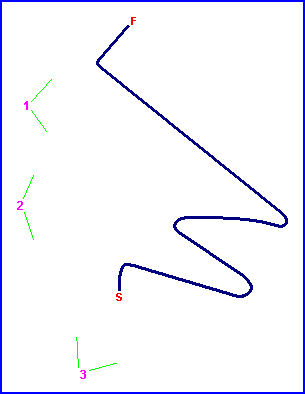
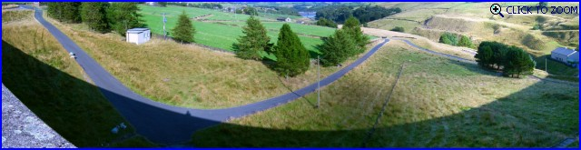
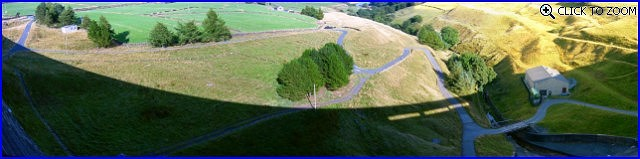
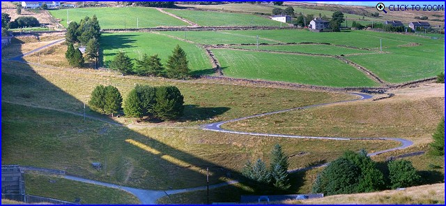

Baitings Dam Hillclimb, United Kingdom
Photographs Taken: 19 August, 2005

Click on the photos below to zoom in

1 - Final corners from the dam wall.

2 - Overhead panorama from the dam wall.

3 - The course from the opposite side of the
valley.
Return to racingcircuits.net's Photo Archive Main Index
©2005 Daniel King / racingcircuits.net. All rights reserved.